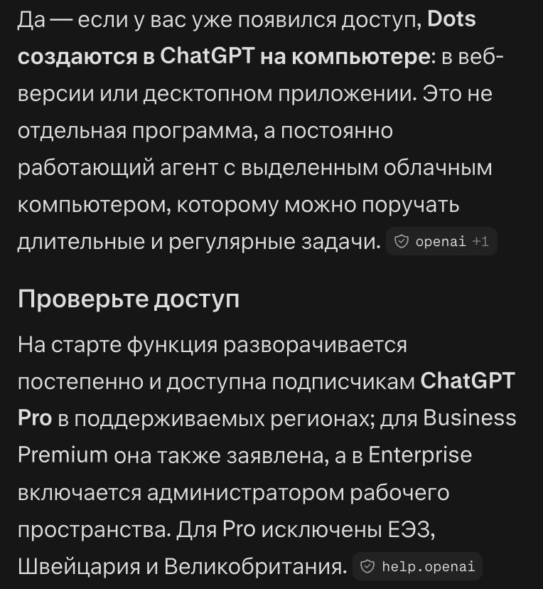
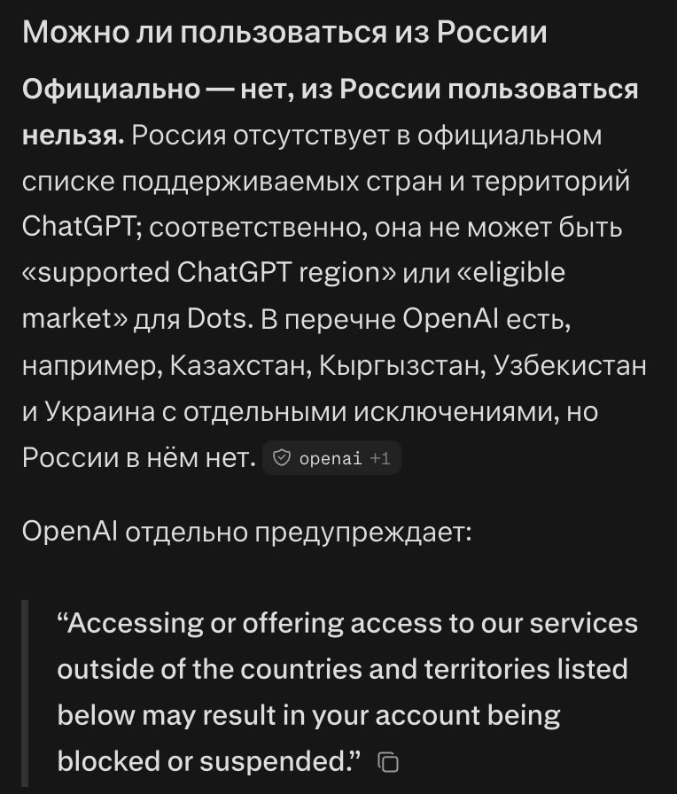

Бесплатные уроки · Perplexity
Найдёшь первоисточник новости и узнаешь, кому, где и за сколько это доступно.
«OpenAI выпустила…», «Google запустила…», «теперь бесплатно» — новости о нейросетях выходят каждый день. Что за заголовком — тест для части людей, платный тариф или другая страна, — видно только у самой компании. Perplexity найдёт её страницу за десять секунд, если попросить. Учимся отвечать на главный вопрос: можно ли этим пользоваться мне.
Новость: «[заголовок новости]». Найди первоисточник — объявление или справку самой компании. Процитируй дословно: кому это доступно, в каких странах, сколько стоит, это запуск или тест. Отдельно скажи, можно ли пользоваться этим из России. Пересказы одного и того же текста считай одним источником.
29 сентября по каналам разошлась новость: «OpenAI выпустила Dots — агентов, которые работают внутри ChatGPT круглосуточно». Сначала мы спросили, как спросил бы читатель: «Как мне ими пользоваться?»

Ответ толковый: дальше — где нажать и как настроить. Но какие регионы «поддерживаемые», Perplexity не сказал. Читатель из России потратил бы вечер на поиски кнопки, которой у него не будет.
Потом — запрос из урока. Ответ другой: ссылки на объявление OpenAI и её справку, цитаты дословно. Доступ открывают постепенно; Pro — кроме Европы, Швейцарии и Великобритании; Business Premium — где работает ChatGPT; для крупных компаний — бета. Первый агент входит в тариф без доплаты, но сам тариф платный. И отдельно:

Мы открыли список стран ChatGPT на сайте OpenAI: России там нет, а Казахстан, Кыргызстан, Узбекистан и Украина есть. Предупреждение о блокировке аккаунта совпало слово в слово.
Пять ссылок под новостью — ещё не пять подтверждений. 28 сентября заметку о новой модели Claude на Хабре и на vc.ru выложил один и тот же автор — блог компании GPTunneL: две ссылки, один текст. Заголовок там «на 30% быстрее и дешевле». А у самой Anthropic цена прежняя: дешевле «до 30%» обходится задача, потому что модель тратит меньше слов на ответ.
Возьми свежую новость о нейросети или приложении. Узнай по первоисточнику: кому это доступно, в каких странах и сколько стоит.
Урок рассчитан на сайт perplexity.ai; у нас были бесплатный план и режим «Поиск». Названия кнопок могут отличаться в приложении и после обновлений. Подписка на наше обучение не включает платные тарифы нейросетей.
Perplexity — запросы урока проверены 4 октября 2026, бесплатный план, режим «Поиск». Цитаты сверены со справкой OpenAI о dots и списком стран ChatGPT на help.openai.com, сведения о Claude Sonnet 5.5 — с объявлением Anthropic.
Дальше в курсе ещё 5 уроков, первый — «Актуальность: дата события и статьи». Они открываются в приложении в Telegram: там же отметки прочитанного, серия и практика.
Открыть следующий урок в TelegramКак войти и что ещё умеет Perplexity — разбор на сайте. Все нейросети, которые открываются из России, — на одной странице.